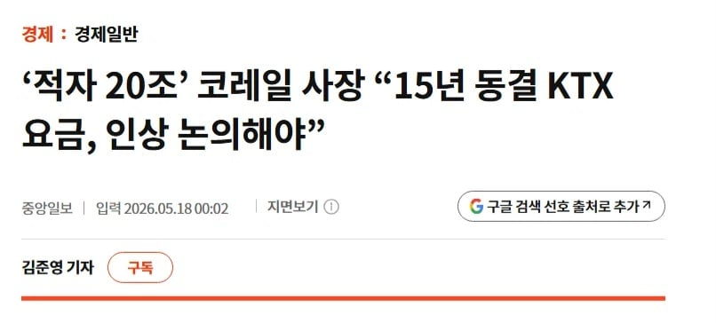

https://www.joongang.co.kr/article/25429068
10년 전 대비 시외버스 요금은 물가 기준 22.6% 상승
같은 기간 열차 이용료는 -2.9% 하락
요금인상 찬성함?

https://www.joongang.co.kr/article/25429068
10년 전 대비 시외버스 요금은 물가 기준 22.6% 상승
같은 기간 열차 이용료는 -2.9% 하락
요금인상 찬성함?
그래서 SRT랑 합쳐진거 자나
한전도 그렇고 코레일도 그렇고 공공기관 부채심각한데 터져서 민영화나기전에 관리해야된다봄
지하철, 버스도 요금 현실화해야지
KTX승무원이랑 사겨봤다 질문받는다
KTX에서 똥 싸고 물 내리면 깔끔하게 안 내려가던데 왜 그런거예요? 뒷사람한테 너무 미안해
올려야지 좆퓰리즘도 작작 좀 해라
전부 다 니네 세금으로 갚아야할 적자들임
올려야할때 안올리고 나중에 하려니 온갖 잡소리가 다 나옴